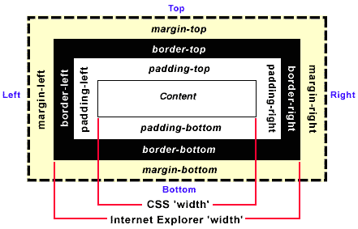

图解CSS padding、margin、border属性

W3C组织建议把所有网页上的对像都放在一个盒(box)中，设计师可以通过创建定义来控制这个盒的属性，这些对像包括段落、列表、标题、图片以及层。盒模型主要定义四个区域：内容(content)、内边距(padding)、边框(border)和外边距(margin)。对于初学者，经常会搞不清楚margin，background-color，background-image，padding，content，border之间的层次、关系和相互影响。这里提供一张盒模型的3D示意图，希望便于你的理解和记忆。
margin：层的边框以外留的空白
background-color：背景颜色
background-image：背景图片
padding：层的边框到层的内容之间的空白
border：边框
content：内容
接下来将讲述HTML和CSS的关键——盒子模型(Box model)。理解Box model的关键便是margin和padding属性，而正确理解这两个属性也是学习用css布局的关键。
注: 为什么不翻译margin和padding?
原因一: 在汉语中并没有与之相对应的词语；
原因二: 即使有这样的词语, 由于在编写css代码时, 必须使用margin和padding, 如果我们总用汉语词语代替其来解释的话, 到了实际应用时容易混淆margin和padding的概念。
如果有一点Html基础的话，就应该了解一些基本元素(Element)，如p、h1~h6、br、div、li、ul、img等。如果将这些元素细分，又可以分别为顶级(top-level)元素、块级(block-level)元素和内联(inline)元素。
块级元素是构成一个html的主要和关键元素，而任意一个块级元素均可以用Box model来解释说明。
Box Model: 任意一个块级元素均由content(内容)、padding、background(包括背景颜色和图片)、border(边框)、margin五个部分组成。
立体图如下:
平面图如下:
根据以上两图，相信大家对于Box model会有个直观的认识。
以下说明margin和padding属性:
1、margin: 包括margin-top、margin-right、margin-bottom、margin-left，控制块级元素之间的距离，它们是透明不可见的。根据上、 右、下、左的顺时针规则，可以写为 margin: 40px 40px 40px 40px;
为便于记忆，请参考下图:
当上下、左右margin值分别一致, 可简写为:
margin: 40px 40px; 前一个40px代表上下margin值，后一个40px代表左右margin值。
当上下左右margin值均一致，可简写为:
margin: 40px;2、Padding: 包括padding-top、padding-right、padding-bottom、padding-left，控制块级元素内部，content与border之间的距离，其代码，简写请参考margin属性的写法。
至此，我们已经基本了解margin和padding属性的基本用法。但是，在实际应用中，却总是发生一些让你琢磨不透的事，而它们又或多或少的与margin有关。
注: 当你想让两个元素的content在垂直方向(vertically)分隔时，既可以选择padding-top/bottom，也可以选择margin-top/bottom，再此Ruthless建议你尽量使用padding-top/bottom来达到你的目的，这是因为css中存在Collapsing margins(折叠的margins)的现象。
Collapsing margins: margins折叠现象只存在于临近或有从属关系的元素，垂直方向的margin中。
详细说明如下：
如果只提供一个，将用于全部的四条边；
如果提供两个，第一个用于上－下，第二个用于左－右；
如果提供三个，第一个用于上，第二个用于左－右，第三个用于下；
如果提供全部四个参数值，将按上－右－下－左的顺序作用于四边。
body { padding: 36px;} //对象四边的补丁边距均为36px body { padding: 36px 24px; } //上下两边的补丁边距为36px，左右两边的补丁边距为24px body { padding: 36px 24px 18px; } //上、下两边的补丁边距分别为36px、18px，左右两边的补丁边距为24px body { padding: 36px 24px 18px 12px; } //上、右、下、左补丁边距分别为36px、24px、18px、12px